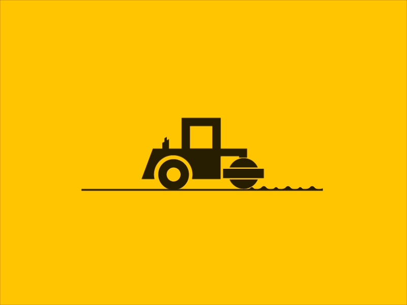

About
Hey my name is Tijl, I'm 19 years old and studying applied computer science at HoGent. I'm passionate about creating, problem solving and math so when I started programming it was love at first sight!
Experience in: Java, Html5, css3, canvas, ajax, Json, mysql, sass, scss, jquery and javascript.
When I'm not programming I spend a lot of my free time squashing, going for runs or watching over cubs at Scouts Denderleeuw (Site is being updated this year).
Work
With finals coming up I have my hands full with school projects, so I don't really have the time to finish those that i've been working on . But after finals I'll have enough time so be sure to check it out later this year!

Under construction